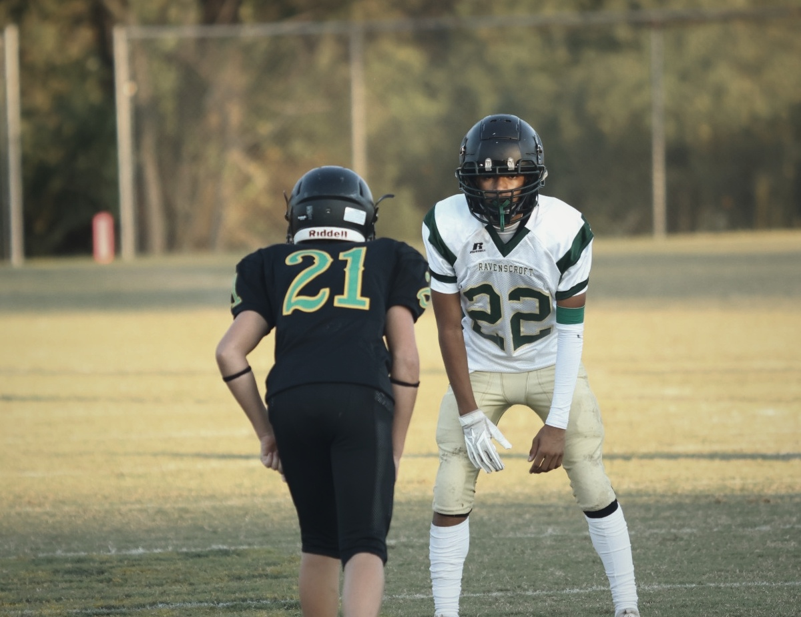
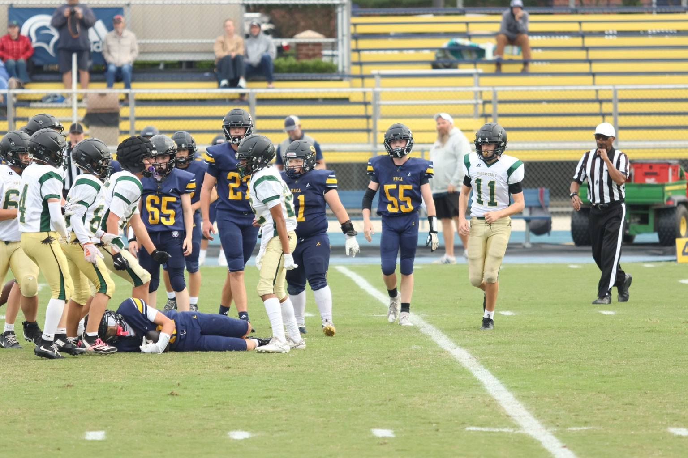
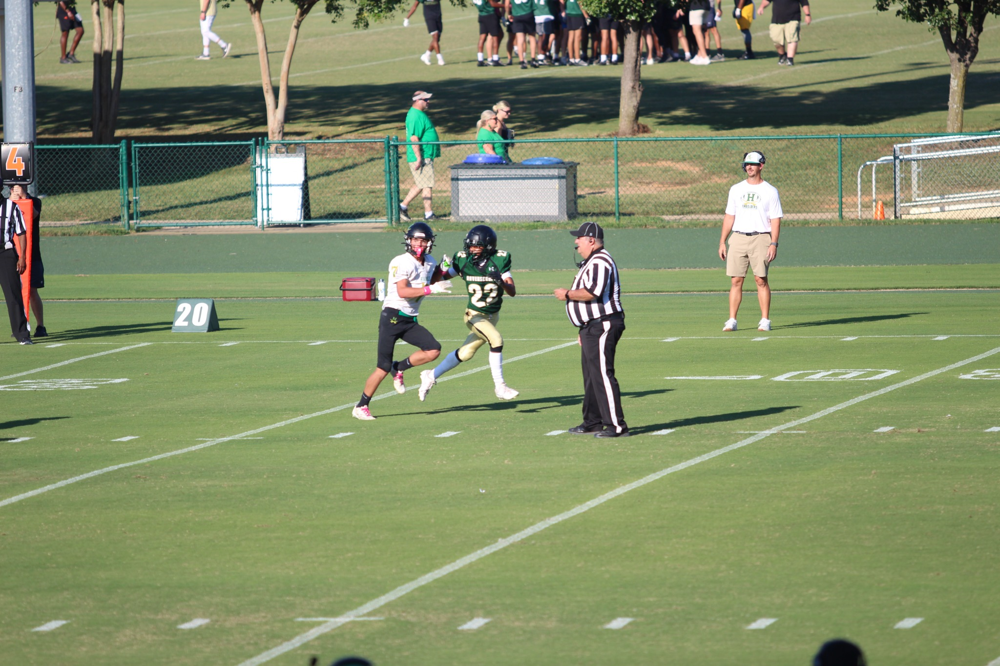

2026 RAVENSCROFT JV FOOTBALL • #22
UNDEFEATED.
8–0. ALL SEASON.
Eight games. Eight wins. A 35–6 road finale at Harrells Christian Academy. Relive the season, one game at a time.
2026 SEASON RECORD8–0UNDEFEATED
LATEST HIGHLIGHTS

GAME 8 • SEASON FINALEUNDEFEATED AT HARRELLS
OCT 15, 2026 • TWO-HOUR ROAD TRIP
WIN 35–6 • 8–0
#22 • DEFENSEFLYING TO THE FOOTBALL
SAFETY • RAVENSCROFT
ROAD DEFENSE
GAME 4PASS COVERAGE
SEP 17, 2026 • RAVENSCROFT
42–6 WIN • #22 DB2026 SCHEDULE
W
SOUTH WAKE LIONSHOME • FIELD 1
23–14FINAL
W
NORTH RALEIGH CHRISTIAN ACADEMYHOME • FIELD 1
21–0FINAL
W
WAYNE CHRISTIANHOME • FIELD 1
28–0FINAL
W
HARRELLS CHRISTIAN ACADEMYHOME • FIELD 1
42–6FINAL
W
NORTH RALEIGH CHRISTIAN ACADEMYAWAY
32–8FINAL
W
GRACE CHRISTIAN OF RALEIGHHOME • FIELD 1
22–0FINAL
W
WAYNE CHRISTIANAWAY
35–0FINAL
W
HARRELLS CHRISTIAN ACADEMYAWAY • SEASON FINALE
35–6FINAL • 8–0
SEASON ARCHIVE
THE FULL STORY.
Every available gallery stays online, including the season finale.
All football game galleries →